✅ Probat
Afirmații susținute de dovezi verificabile. Sursele sunt lângă fiecare, ca să le puteți controla singuri.
731 verificări, cele mai noi întâi. Vezi și: ❌ Contrazis · ⚠️ Contestat · 🔍 În verificare
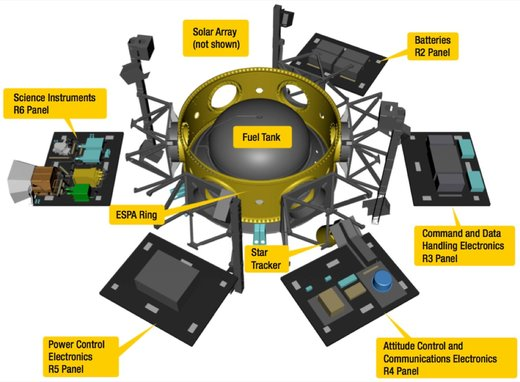
Cercetarea despre războaie măsoară violența aproape numai prin numărul de morți, iar numărul de morți depinde de cine a fost acolo să numere. Un studiu din Nature arată ce se vede în plus din satelit, în Ucraina și în Myanmar
Când se studiază un război, datele vin din relatări scrise, iar intensitatea violenței se măsoară aproape exclusiv prin morți. Problema, spun autorii:…
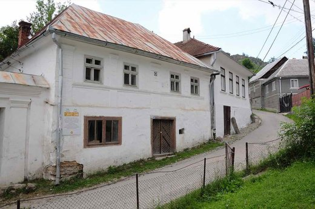
Ce a însemnat mineritul la Roșia Montană, prin ce-și amintesc oamenii locului: un studiu de la Universitatea din Alba Iulia a stat de vorbă cu șapte preoți și a chestionat 327 de localnici, printre care 45 de strămutați
Patru cercetători de la Alba Iulia au urmărit cum s-a schimbat înțelesul mineritului la Roșia Montană în patru epoci: comunismul târziu, anii de după 1989…
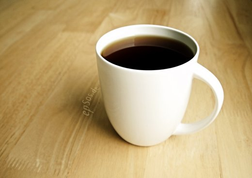
Aproape un milion de britanici, urmăriți în medie 14 ani: cine își bea ceaiul și cafeaua „foarte fierbinți” are un risc de trei ori mai mare pentru un tip de cancer esofagian. Pentru celălalt tip de cancer esofagian, niciun risc în plus
Că băuturile fierbinți la vreo 70 de grade cresc riscul de cancer esofagian se știa din studii făcute în Asia, Africa, America de Sud și Orientul Mijlociu…
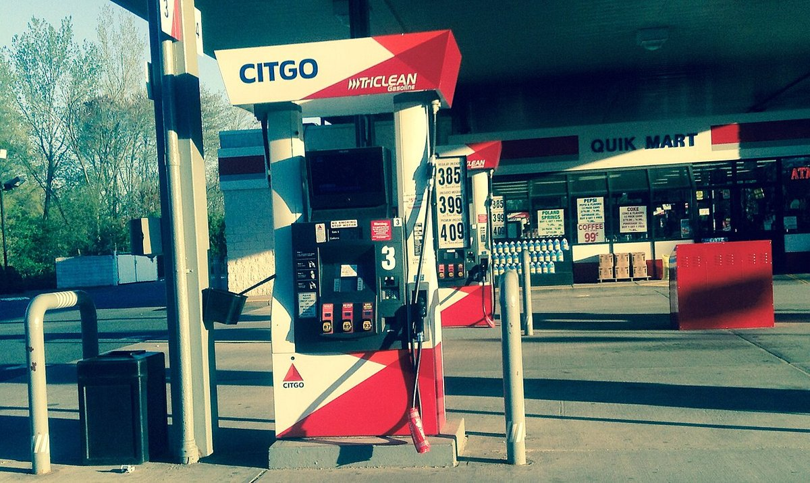
Benzina a atins un „record” de Labor Day în SUA — dar doar în dolari neajustați, nu față de 2008
🌍 Prețul mediu al benzinei în SUA a atins 4,14 dolari pe galon de weekendul de Labor Day (3 septembrie 2026), potrivit AAA — cel mai mare nivel înregistrat…
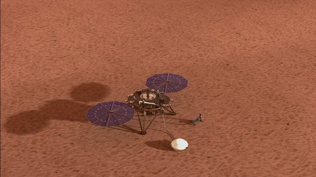
Sub Marte s-au format cândva sisteme uriașe de magmă, deși planeta n-are plăci tectonice, arată date seismice de la InSight
O echipă condusă de cercetătorul Tobermory Mackay-Champion, pe atunci la Universitatea Oxford, a analizat datele seismice ale misiunii NASA InSight și a…
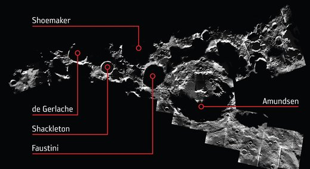
Microbi aduși de oameni ar putea supraviețui la polul sudic al Lunii, arată un studiu NASA gândit pentru misiunile Artemis
Cercetători de la NASA Goddard, conduși de Prabal Saxena, au testat prin modelare cinci microorganisme cunoscute pentru rezistența lor și au descoperit că…
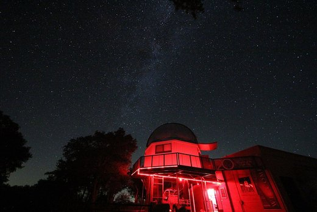
Un singur impact de asteroid ar putea explica două mistere ale lunii marțiene Deimos, arată simulări confirmate de sonda Hera
O echipă condusă de Universitatea din Berna arată, prin aproape 100 de simulări pe computer combinate cu date reale de la survolarea Deimos de către sonda…
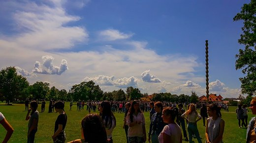
Cutremurele din Gorj din februarie 2023, refăcute pas cu pas de fizicienii de la Măgurele: o falie normală înclinată spre sud-est, ruptura urcând spre nord-vest, alunecare de doar 5 și 12 centimetri și peste 4.400 de replici într-un an
Pe 13 și 14 februarie 2023, două cutremure de magnitudine 4,9 și 5,4, la circa 20 de kilometri adâncime, au zguduit Târgu Jiu și s-au simțit până în…
Cornell a făcut apă potabilă din apă de mare cu lână de oaie vopsită în negru și pusă la soare: 2,43 litri pe metru pătrat pe oră, sare sub limita OMS, zece ore fără să se înfunde. Materialul e biodegradabil și nu lasă microplastic
Un laborator de design vestimentar de la Cornell, condus de Larissa Shepherd, a vopsit lâna cu polidopamină, un polimer inspirat de melanina din midii, care…
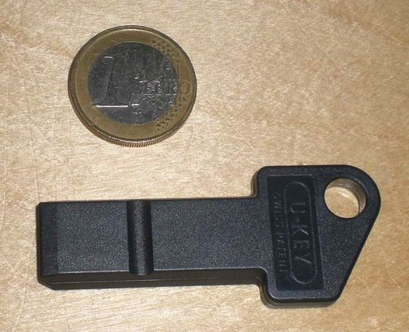
MIT a rulat 3.735 de scenarii pentru 2050: în Europa de Est, cei mai săraci 10 % ar putea da 11,3 % din venit pe energie, cei mai bogați sub 5 %. În Africa de Sud, săracii ar da jumătate din venit pe mâncare
Nu o prognoză, ci o hartă a riscurilor: cercetătorii de la MIT, Stanford, Tufts, Tulane și Laboratorul Național Pacific Northwest au variat 12 factori…
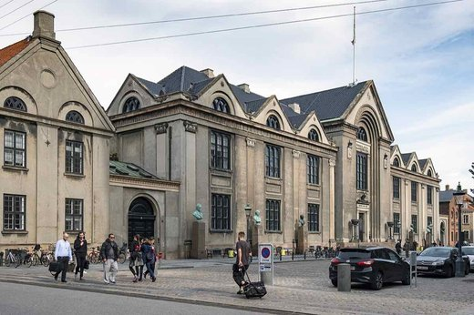
1.038 de psihiatri din 19 țări, inclusiv România, au primit aceleași cazuri scrise. Doi medici au ajuns la același diagnostic doar în 55 % din cazuri; la schizofrenie, sub 50 %. Experiența n-a schimbat nimic
Nouă descrieri standardizate de pacienți, câte două pentru fiecare medic, diagnostic după sistemul ICD-10 al OMS. Rezultatul: acordul între doi psihiatri…
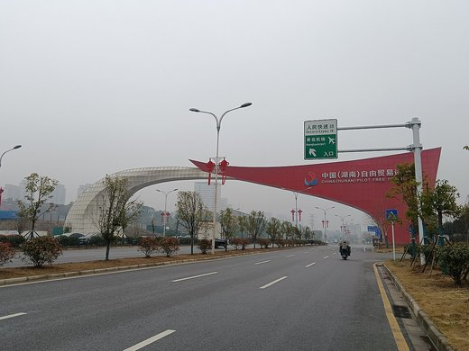
Exporturile Chinei au crescut 25% în august față de anul trecut, iar cele către SUA au „explodat” cu 34,4% — dar o parte din salt vine din compararea cu un august 2025 slăbit de tarife
🌍 Datele vamale oficiale ale Chinei, publicate pe 8 septembrie 2026, arată exporturi în creștere cu 25% față de august 2025 și un excedent comercial record…
Israelul detonează 1.100 de tone de explozibil sub creasta Ali al-Taher din Liban, provocând un cutremur de 4,1 — președintele Aoun exclude „în acest moment” negocieri noi cu Israelul
🌍 Armata israeliană a detonat pe 10 septembrie 2026, sub creasta Ali al-Taher din sudul Libanului, un complex subteran de peste doi kilometri pe care îl…
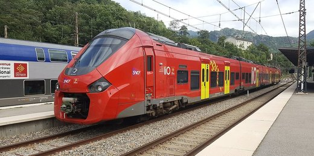
Un tren regional a deraiat în Normandia, la Cléon — poliția franceză anchetează sabotajul ca pistă principală, 44 de răniți
Un tren regional cu 186 de pasageri, pe ruta Rouen–Caen, a deraiat vineri seară, 11 septembrie 2026, la Cléon (Seine-Maritime). 44 de persoane au fost…
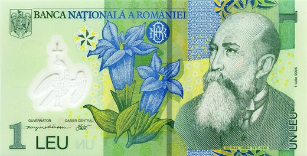
INS: salariul mediu net a crescut cu 5,5% în iulie față de anul trecut, dar puterea de cumpărare a scăzut cu 2,5%
Institutul Național de Statistică a comunicat pe 10 septembrie 2026 că câștigul salarial mediu net a ajuns la 5.820 lei în iulie, cu 5,5% mai mult decât în…
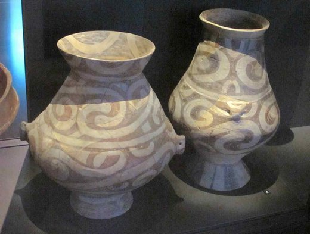
Lângă Iași, arheologii au dezgropat cel mai mare cuptor de olărie cucutenian cunoscut: 7,5 metri pătrați de vatră, 12 metri cubi, acum 6.000 de ani. Studiul, publicat în Antiquity, e semnat integral de cercetători români
La Ursoaia, județul Iași, o măsurătoare magnetică din 2024 a scos la iveală o așezare de aproape 8 hectare, cu vreo 60 de case arse și cel puțin opt…
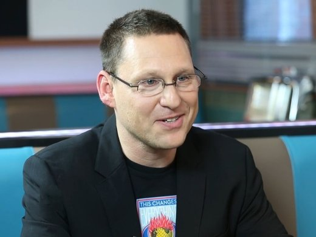
MIT: o rafală de 50 de milisecunde de „zgomot roz”, trimisă exact pe vârful undelor lente din somn, mărește valurile de lichid care spală creierul. Testat pe 14 voluntari sănătoși, cu EEG și RMN în același timp
Ziua, în creier se adună acid lactic și proteine uzate; noaptea, valuri de lichid cefalorahidian le spală. Cercetătorii MIT au arătat că pot mări aceste…
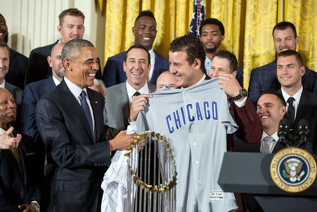
Un studiu clinic de la Universitatea din București a testat „terapia în metavers” pe refugiați ucraineni. A câștigat grupul de sprijin față în față, iar din 156 de participanți mai mult de jumătate au renunțat pe drum
Din aproximativ 1.000 de refugiați ucraineni evaluați în București între ianuarie 2024 și martie 2025, 156 au intrat în studiu (153 femei, vârsta medie 47 de…
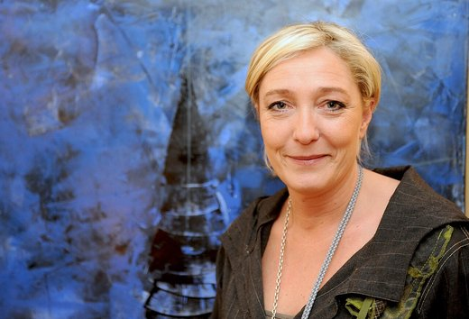
Sondajele din Franța o dau pe Marine Le Pen câștigătoare în 2027 — dar scorul din turul doi variază enorm în funcție de cine îi este adversar
Două sondaje publicate la începutul lui septembrie 2026 (Ipsos pentru Le Parisien, OpinionWay pentru CNEWS) o arată pe Marine Le Pen cu un avans clar în…
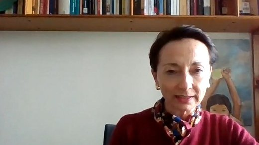
Curtea Supremă a Chile a demis 11 judecători care au călătorit în străinătate pe concediu medical — Asociația Magistraților vorbește despre un atac la independența justiției
Plenul Curții Supreme din Chile a decis pe 11 septembrie 2026 demiterea a 11 judecători găsiți vinovați că au călătorit în străinătate în timp ce se aflau în…
Parlamentul Nigeriei suspendă relațiile cu cel al Africii de Sud, invocând nigerieni uciși în valuri de violență xenofobă — dar cifrele diferă de la o zi la alta
Adunarea Națională a Nigeriei a anunțat pe 11 septembrie 2026 suspendarea tuturor vizitelor oficiale și a participării la evenimente găzduite de Parlamentul…
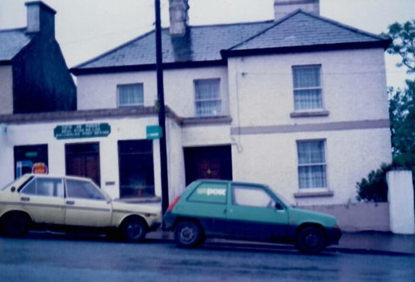
MIT și Motional au făcut o mașină autonomă să spună în cuvinte de ce frânează. Șoferul a aflat că nu vedea biciclistul, ci se oprea doar din reflexul de urgență
CW-Net e un modul care se prinde în mijlocul „creierului” unei mașini autonome și îi traduce raționamentul în concepte pe care le înțelege un om: „mă apropii…
Stanford a blocat o singură proteină a îmbătrânirii și cartilajul din genunchii șoarecilor bătrâni a crescut la loc. A pornit regenerarea și în țesut uman scos la proteze. Deocamdată doar în laborator
Proteina se numește 15-PGDH și se dublează în cartilaj odată cu vârsta. Blocată cu o moleculă mică, injectată în abdomen sau direct în genunchi, cartilajul…
Un model de inteligență artificială a nimerit diagnosticul la triajul din urgență în 67% din 76 de cazuri reale, față de 55% și 50% pentru doi medici. Autorii spun că nu e gata pentru pacienți, iar un medic de urgență spune că s-a comparat cu specialitatea greșită
Harvard Medical School și Beth Israel Deaconess au dat modelului o1 al OpenAI exact ce aveau și medicii: fișa electronică, semnele vitale, câteva rânduri…
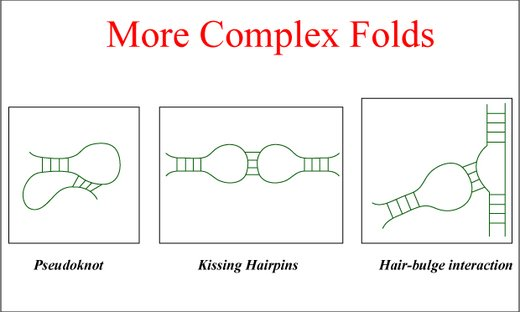
MIT a cartografiat 31 de tipuri de neuroni din striat, regiunea creierului lovită de Huntington, schizofrenie și adicție. Și a găsit de ce partea de sus a striatului cedează prima
Din țesut donat de oameni, băncilor de creier din SUA și Canada, cercetătorii MIT au făcut un atlas al neuronilor din striat: 31 de subpopulații, dintre care…
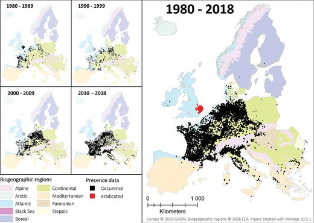
Vârfurile munților Europei au tot mai multe specii de plante. Un studiu în Science, cu cercetători de la Cluj, arată că tocmai asta ascunde dispariția plantelor alpine
Douăzeci de ani, 62 de vârfuri din 16 lanțuri muntoase, 896 de parcele de vegetație numărate de patru ori, între 2001 și 2022, inclusiv în Munții Rodnei…
SUA: administrația Trump cere, a treia oară, Curții Supreme să lase regula USPS pentru votul prin corespondență să intre în vigoare înaintea alegerilor de la mijlocul mandatului
🌍 Un ordin executiv al președintelui Trump, semnat pe 31 martie 2026, a dus la o regulă a Poștei americane (USPS) care impune design standardizat de plic…
China a extins patrulele gărzii de coastă la est de Taiwan — Beijingul le numește „de rutină”, Taipei vorbește despre o „nouă normalitate” impusă
🌍 Din iunie 2026, Garda de Coastă chineză a trimis în medie două nave pe lună la est de Taiwan, într-o zonă de peste 27.000 de mile marine pătrate — dublul…
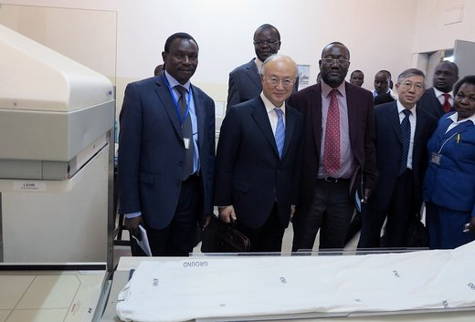
Kenya: greva asistentelor s-a încheiat după 43 de zile — Comisia pentru Drepturile Omului a semnalat 79 de decese, dar spune că legătura cu greva trebuie verificată clinic
🌍 Asistentele medicale din spitalele publice kenyene au intrat în grevă pentru punerea în aplicare a unui acord salarial din 2017, iar mișcarea s-a încheiat…
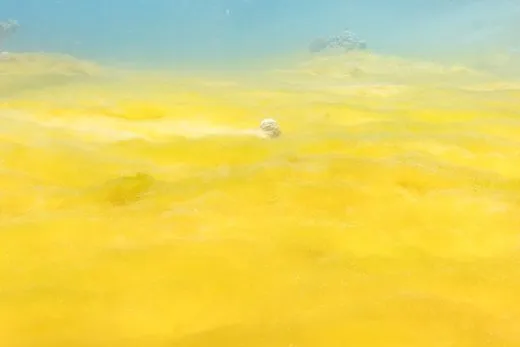
Microplastice găsite în peste jumătate din tumorile intestinale analizate într-un studiu publicat în Nature Health
Un studiu publicat în Nature Health, pe 188 de mostre de țesut din tumori intestinale prelevate de la pacienți, a găsit microplastice în 106 dintre ele —…
Cercetători suedezi propun, teoretic, operații pe biți cuantici de peste 1.000 de ori mai rapide — dar ideea n-a fost încă testată pe un computer real
Un studiu teoretic publicat în Physical Review Letters, semnat de cercetători de la Chalmers University of Technology (Suedia), propune o metodă — numită…
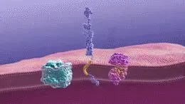
Un studiu pe 3.119 oameni urmăriți 14 ani arată că „rezistența cognitivă” poate contracara riscul de Alzheimer, chiar și la boală avansată
Un studiu publicat pe 11 septembrie 2026 în Nature Medicine, realizat pe cohorta „China Cognition and Aging Study” (COAST) și urmărit pe o perioadă mediană…
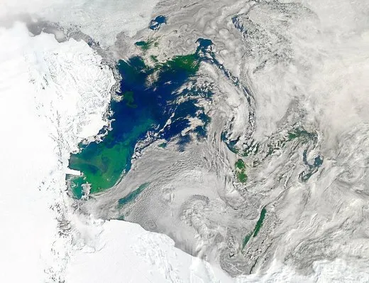
Un asteroid de 80 de centimetri a fost detectat cu șase ore înainte să ardă deasupra Oceanului Indian — al 13-lea caz de acest fel din istorie
Pe 6 septembrie 2026, telescopul Mount Lemmon din Arizona a descoperit un asteroid mic cu aproximativ șase-șapte ore înainte ca acesta să intre în atmosferă…
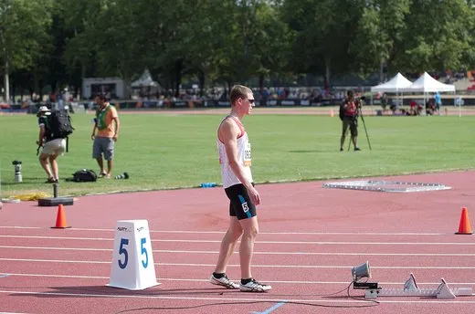
Zverev îl elimină pe Khachanov și ajunge în a doua finală de Grand Slam din 2026 — așteaptă câștigătorul dintre Shelton și Tiafoe
Alexander Zverev l-a învins pe Karen Khachanov cu 6-3, 7-6(7), 7-6(6) în semifinalele US Open 2026, pe 11 septembrie, și s-a calificat în a doua sa finală de…
UE propune reguli noi la achizițiile publice: autoritățile ar putea exclude firmele chineze din contracte de peste 2.000 de miliarde de euro pe an
Comisia Europeană, prin comisarul pentru industrie Stéphane Séjourné, a prezentat pe 9 septembrie 2026 o propunere de reformă a achizițiilor publice din UE —…
ChatGPT a „confirmat” un festival care nu avea loc — peste zece autocare de turiști au ajuns degeaba la Jurilovca
În weekendul 4-5 septembrie 2026, peste zece autocare cu turiști, plus numeroși alții cu mașini personale, au ajuns în comuna Jurilovca (județul Tulcea)…

Digi24 relatează, citând surse din PNL, un scenariu de demisie a lui Bolojan — Guvernul îl dezminte: „fake news absolut”
Digi24 a scris pe 11 septembrie 2026, citând surse din PNL, că premierul interimar Ilie Bolojan ar lua în calcul demisia pentru a forța președintele Nicușor…
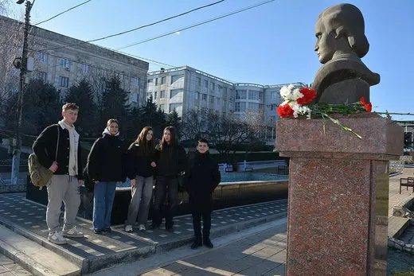
Găgăuzia riscă blocaj și contestarea alegerilor duble din 15 noiembrie, avertizează un ONG local — pe fondul unei tentative de anulare a scrutinului
Organizația „Alegerea și Alternativa pentru Găgăuzia” a avertizat, la începutul campaniei electorale, că alegerile duble din 15 noiembrie — pentru funcția de…
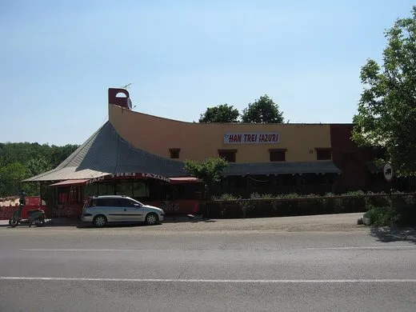
Trei cetățeni israelieni, printre care un copil de 11 ani, ar fi fost dați jos dintr-un autobuz la Chișinău pe motive antisemite — IGP s-a autosesizat
Trei cetățeni ai Israelului, printre care un copil de 11 ani, susțin că au fost împiedicați să urce, pe 8 septembrie, într-un autobuz al companiei Gal Trans…
Comisara europeană Hadja Lahbib, prima vizită oficială în Moldova: reforme, statul de drept și un exercițiu de salvare urbană cu Sandu și Tofan
Hadja Lahbib, comisara europeană pentru Egalitate, Pregătire și Gestionarea Situațiilor de Criză, a făcut pe 11 septembrie 2026 prima sa vizită oficială în…
Transferurile diasporei către Moldova au crescut cu 23% în iulie 2026, arată datele Băncii Naționale
În iulie 2026, moldovenii de peste hotare au trimis acasă prin sistemul bancar 164,85 milioane de dolari — cu aproape 23% mai mult decât în iulie 2025…
John Lewis Partnership a pierdut 124 milioane de lire în primul semestru — presa a citat și cifra de 89 milioane, pentru că măsoară altceva
Grupul britanic John Lewis Partnership (magazinele John Lewis și supermarketurile Waitrose) a raportat pe 10 septembrie 2026 o pierdere înainte de impozitare…
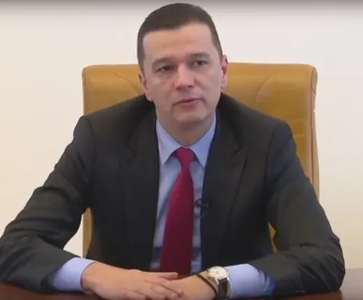
Grindeanu nu exclude alegerile anticipate și spune că PSD acceptă un guvern minoritar — Bolojan contrapropune un guvern tehnocrat de tranziție
În ziua în care expira termenul dat de Nicușor Dan liderilor fostei coaliții să spună dacă susțin un premier independent, liderul PSD Sorin Grindeanu a…
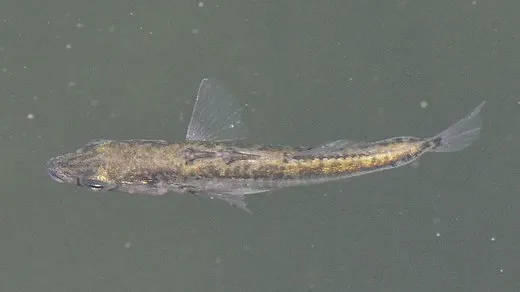
Puii de spinoc crescuți de tată devin mai curajoși și mai sociabili — și le rămâne activitatea genelor din creier schimbată, arată un studiu Penn State
O echipă de la Universitatea Penn State, condusă de Jason Keagy, a arătat că puii de spinoc cu trei ace (Gasterosteus aculeatus) crescuți de tată în primele…
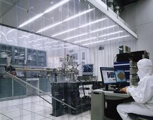
Un microscop 3D a fotografiat pentru prima dată „arhitectura” apei organizate în jurul unei peptide, la scară subnanometrică
O echipă internațională din Japonia, Finlanda, Italia și SUA a folosit un microscop de forță atomică tridimensional pentru a vizualiza direct, prima dată…
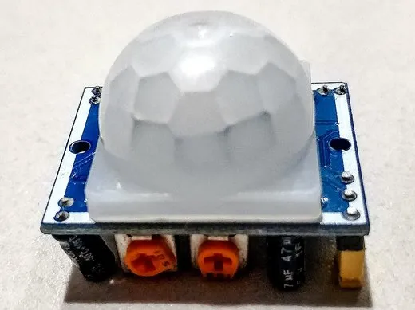
Senzori cuantici răciți aproape de zero absolut măsoară razele X ale plutoniului cu precizie de până la 8 ori mai mare, utilă pentru controlul materialelor nucleare
O echipă a Institutului Național de Standarde și Tehnologie al SUA (NIST), cu colaboratori de la Universitatea Colorado Boulder, Laboratorul Național Los…

Un tip extrem de rar de neuroni din cortex — sub 1% din total — poate declanșa somnul, arată un studiu Nature pe șoareci
O echipă de neuroștiințe a identificat, la șoareci, o populație extrem de rară de neuroni inhibitori din cortex — sub 1% din totalul neuronilor GABAergici…

Houthii cuceresc portul Mocha și ajung la insulele din Bab al-Mandeb; revendicarea insulei Perim rămâne neconfirmată independent
🌍 Pe 10 septembrie 2026, luptătorii houthi susținuți de Iran au preluat controlul orașului-port Mocha, pe coasta yemenită a Mării Roșii, la mai puțin de 80…

Ben Shelton îl elimină pe Carlos Alcaraz în cel mai târziu meci din istoria US Open — finală garantată cu doi americani în semifinală, premieră după 23 de ani
Ben Shelton l-a învins pe campionul en-titre Carlos Alcaraz cu 6-7, 6-1, 6-3, 1-6, 7-6, într-un sfert de finală încheiat la 3:33 dimineața (ora New…

BCE majorează dobânda-cheie la 2,50%, a doua oară în 2026 — Consiliul s-a reunit la Berlin, nu la Frankfurt, pe fondul inflației alimentate de conflictul din Orientul Mijlociu
Consiliul guvernatorilor BCE a decis pe 10 septembrie 2026 o creștere de 0,25 puncte procentuale a celor trei dobânzi de referință — depozit la 2,50%…

Manda (PSD) acuză PNL și USR pe fondul scăderii consumului — cifrele lui despre comerțul cu amănuntul se potrivesc cu INS, dar „a 12-a lună consecutivă” nu are o sursă unică
Secretarul general PSD, Claudiu Manda, a acuzat pe 4 septembrie 2026 PNL și USR că „inventariază voturile” în timp ce INS arată o scădere a consumului: -5,4%…

Canada a aplicat pe 8 septembrie tarife de represalii de 27,6 miliarde de dolari — mai mult decât „dolar pentru dolar” promis — iar Trump a răspuns cu interdicții de import
După colapsul negocierilor comerciale din 21 august, Canada a aplicat pe 8 septembrie 2026 tarife de represalii pe 27,6 miliarde de dolari de bunuri…

O poză reală, o persoană greșit identificată: cum a devenit consiliera lui Nicușor Dan ținta unui fake news văzut de circa un milion de oameni
Martina Orlea, consiliera prezidențială pentru combaterea dezinformării, a fost confundată pe Facebook, TikTok și LinkedIn cu procuroarea Ioana, fotografiată…

PNL a lăudat pe Facebook execuția bugetară pe 7 luni — cifrele oficiale ale Finanțelor confirmă, dar durabilitatea rămâne un semn de întrebare
PNL a prezentat pe Facebook un bilanț al guvernării Bolojan pe primele 7 luni din 2026: deficit redus cu 37%, investiții mai mari cu aproape 15 miliarde de…

Inflația anuală în Moldova a ajuns la 7% în august — dar cifra nu include încă scumpirea de 41% a gazului, intrată în vigoare abia pe 1 septembrie
Biroul Național de Statistică a publicat pe 10 septembrie 2026 indicii prețurilor de consum pentru august: +0,2% față de iulie, +4,9% de la începutul anului…

CEC a fost nevoită să stabilească ea însăși 15 noiembrie pentru alegerea bașcanului Găgăuziei, după ce Adunarea Populară a eșuat de trei ori — a doua oară în instanță
Comisia Electorală Centrală a stabilit pe 1 septembrie 2026 data de 15 noiembrie pentru alegerea bașcanului Găgăuziei și a celor 35 de deputați ai Adunării…

România, cea mai mare inflație din regiune și cele mai scumpe obligațiuni — dar „singura economie în recesiune” nu e o concluzie unanimă a institutelor
O analiză publicată pe 7 septembrie 2026 de Economedia, bazată pe date wiiw și Erste Group, arată România ca singura economie din Europa Centrală și de Est…

Guvernul Luca Niculescu se blochează la circa 200 din 233 de voturi — UDMR cere ca PSD să rupă cu AUR și SOS, Grindeanu și Hunor rămân fără acord
Discuția de marți seară (8 septembrie 2026) dintre liderul PSD Sorin Grindeanu și președintele UDMR Kelemen Hunor s-a încheiat fără înțelegere: PSD ar avea…

Vaccin experimental combinat rabie-Lassa, sigur și cu anticorpi la 100% dintre voluntari — dar doar în primul test pe oameni
Un vaccin experimental care combină protecția împotriva rabiei cu cea împotriva febrei Lassa — LASSARAB — a produs anticorpi la toți cei 44 de voluntari…

Un atașat militar chinez îi lasă un bilet pe masă ministrului filipinez al Apărării, în timp ce vorbea la un forum din Seul — „Sigur, pentru că ați pierdut”
🌍 Pe 9 septembrie 2026, în timp ce ministrul filipinez al Apărării, Gilberto Teodoro Jr., răspundea unei întrebări despre coerciția Chinei în Marea Chinei de…